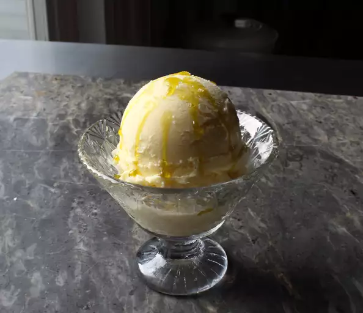

Gelato alla crema

Description
Answering the question 'What would vanilla ice cream taste like without any vanilla?', Italian 'crema' ice cream is exceptionally delicious not because of what's in it, but rather what isn't. Ironically, it might be the best vanilla ice cream I've ever had. Without any other flavors in the way, all you taste is the sweet goodness of milk and cream, which I think is a revelation.
Ingredients
- 2 cups whole milk
- ⅔ cup white sugar
- 1 tablespoon white sugar
- 5 egg yolks
- 1 cup heavy cream
- ⅛ teaspoon kosher salt
Steps
- Pour milk into a saucepan. Add 2/3 cup plus 1 tablespoon sugar and egg yolks. Whisk thoroughly. Cook over medium heat, stirring gently with a spatula, until custard is steaming-hot and thick enough to coat the back of a spoon, about 10 minutes. Stir in heavy cream and salt and remove from heat
- Pour custard through a fine mesh strainer and refrigerate until completely chilled, 8 hours to overnight.
- Pour mixture into an ice cream maker and churn according to manufacturer's instructions, about 20 minutes. Seal top with plastic wrap, cover with a lid, and freeze until firm, at least 4 hours.